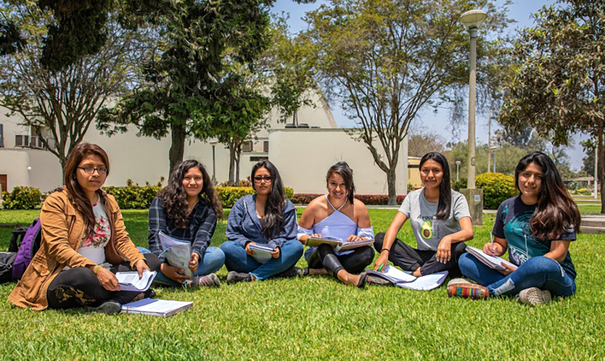
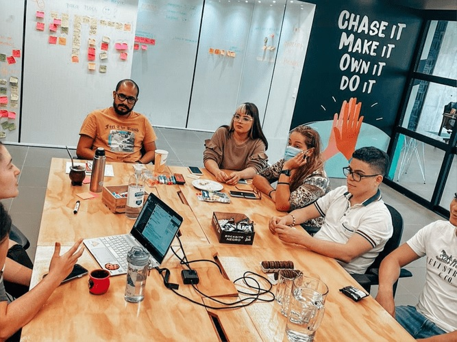
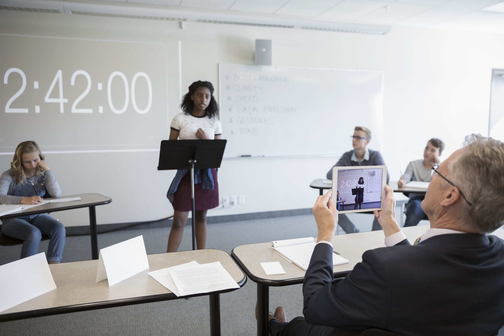

Comunidad de becarios
Una comunidad de becarios es un grupo de estudiantes o profesionales que se han beneficiado de programas de becas y se han unido para compartir experiencias, conocimientos y recursos para lograr objetivos comunes.
Leer másSomos una organización la cual se esfuerza por ser una fuente confiable y justa para los estudiantes en la búsqueda de becas y estamos comprometidos en hacer que el proceso sea lo más fácil y accesible posible. En nuestra página web, creemos que todas las personas merecen la oportunidad de recibir una educación y estamos aquí para ayudar a hacerlo realidad. ¡Gracias por visitar nuestra página web y esperamos poder ayudarte en tu búsqueda de becas!
Una comunidad de becarios es un grupo de estudiantes o profesionales que se han beneficiado de programas de becas y se han unido para compartir experiencias, conocimientos y recursos para lograr objetivos comunes.
Leer másUn programa de mentores es un proceso de acompañamiento y asesoría en el que un mentor, que es una persona con experiencia y conocimientos en una determinada área, comparte sus conocimientos y habilidades con un mentee o aprendiz.
Leer másLas empresas pueden obtener una serie de beneficios al ofrecer becas a estudiantes o empleados interesados en continuar su educación, algunos de ellos incluyen:
Leer másEvento en el que se reúnen estudiantes y profesionales, para trabajar juntos en el desarrollo de soluciones creativas e innovadoras para los desafíos y oportunidades que se presentan en este ámbito, esto es exclusivo para estudiantes que ya pertenecen al programa de mentorías.
Leer másEste tipo de programa de intercambio tiene como objetivo fomentar la comprensión intercultural, la empatía y la colaboración entre estudiantes de diferentes partes del mundo. Al participar en un intercambio global virtual, los estudiantes pueden:
Leer más- Compartir experiencias: Los miembros de la comunidad pueden compartir sus experiencias sobre cómo obtuvieron la beca, cómo se adaptaron a una nueva cultura o entorno, cómo lograron sus objetivos académicos o profesionales, y cómo han aplicado sus conocimientos en su campo de trabajo.
Redes de apoyo: Las comunidades de becarios suelen ofrecer un espacio seguro y acogedor para que los miembros se sientan apoyados y puedan obtener consejos y orientación de otros becarios con intereses similares.
- Recursos compartidos: Los miembros pueden compartir información y recursos sobre oportunidades de becas, programas de intercambio, eventos, publicaciones y oportunidades de empleo que puedan ser de interés para los demás miembros.
- Colaboración: Las comunidades de becarios pueden ofrecer oportunidades para colaborar en proyectos académicos o profesionales, compartir ideas, y participar en actividades comunitarias que fomenten el desarrollo personal y profesional.
En general, las comunidades de becarios son un espacio valioso para el crecimiento personal y profesional de sus miembros, ya que permiten a los becarios conectar con otros individuos con intereses similares y tener acceso a recursos y oportunidades que podrían no estar disponibles de otra manera.
- Asignación de mentor: El programa de mentores suele asignar un mentor al mentee en función de sus intereses, necesidades y metas profesionales.
- Establecimiento de objetivos: Al inicio del programa, se establecen objetivos y metas claras para que el mentee pueda tener un enfoque claro y medible de su progreso.
- Plan de acción: El mentor y el mentee desarrollan un plan de acción para el mentee, que puede incluir tareas específicas, lecturas o proyectos para desarrollar las habilidades necesarias.
- Reuniones periódicas: El mentor y el mentee se reúnen regularmente para discutir el progreso del aprendiz y para abordar cualquier problema o preocupación que puedan surgir durante el programa.
- Retroalimentación: El mentor proporciona retroalimentación constructiva al mentee sobre su desempeño, fortalezas y áreas de mejora.
- Duración: La duración de un programa de mentores varía según el enfoque y las necesidades de los participantes, pero suelen durar entre tres y seis meses.
- Atraer talento: Las becas pueden ser una herramienta para atraer a los mejores estudiantes o empleados interesados en mejorar sus habilidades y conocimientos en áreas específicas relacionadas con la empresa. Esto puede mejorar la reputación de la empresa y atraer talento altamente calificado.
- Retener talento: Ofrecer becas a los empleados actuales puede ser una forma de retenerlos en la empresa. Esto puede aumentar la satisfacción y el compromiso del empleado con la empresa, lo que a su vez puede mejorar la productividad y el rendimiento del empleado.
- Desarrollo de habilidades: Las becas pueden ayudar a los estudiantes o empleados a adquirir nuevas habilidades y conocimientos que son relevantes para la empresa. Esto puede mejorar su capacidad para realizar tareas específicas y aumentar su valor para la empresa.
- Mejorar la imagen de la empresa: Ofrecer becas puede mejorar la imagen de la empresa ante la sociedad y la comunidad, lo que puede tener un impacto positivo en la marca y la reputación de la empresa.
- Fomentar la innovación: Los estudiantes o empleados que reciben becas pueden tener la oportunidad de desarrollar nuevas ideas y soluciones innovadoras que pueden ser relevantes para la empresa. Esto puede fomentar la innovación y mejorar la competitividad de la empresa.
Te invitamos a ofrecer una beca a un alumno- Durante el hackathon, los equipos trabajan juntos para crear soluciones innovadoras y presentar sus ideas y prototipos a un panel de jueces que evalúan su originalidad, viabilidad y potencial impacto en la comunidad de becarios.
- Un hackathon de becas puede ser una excelente oportunidad para fomentar el trabajo en equipo, la creatividad, el pensamiento crítico y la colaboración en el desarrollo de soluciones para los desafíos que enfrentan los estudiantes y profesionales que buscan financiamiento a través de programas de becas. Además, también puede proporcionar una plataforma para que los participantes establezcan contactos y relaciones valiosas en la comunidad de becarios y en la industria relacionada con becas.
- Este espacio es brindado una vez al año, el mes de Enero.
- Para participar del Hackaton el estudiante debe de pertenecer al programa de mentorías.
- A la idea ganadora se le entregará un certificado por parte de Kayfuture, acompañamiento para mejorar el proyecto para el ganador(a) y un premio sorpresa.
- Aprender sobre diferentes culturas y costumbres, y adquirir una perspectiva global más amplia.
- Desarrollar habilidades de comunicación y trabajo en equipo con personas de diferentes culturas y orígenes.
- Desarrollar habilidades de comunicación y trabajo en equipo con personas de diferentes culturas y orígenes. (Si el estudiante aún no tiene un buen dominio del idioma con el que tiene que hablar haremos uso de la aplicación Interprefy)
- Desarrollar habilidades tecnológicas y digitales al trabajar con plataformas en línea y herramientas de comunicación. (Todas las sesiones se darán en zoom, Teams o Webex)
- Adquirir conocimientos sobre temas globales y aprender sobre cómo diferentes países y culturas abordan estos temas.
En general, los intercambios globales virtuales brindan una oportunidad única para que los estudiantes de todo el mundo se conecten, aprendan y colaboren de manera virtual, fomentando la empatía y la comprensión intercultural en un mundo cada vez más conectado.